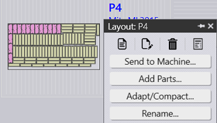
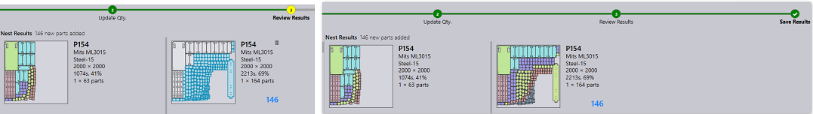
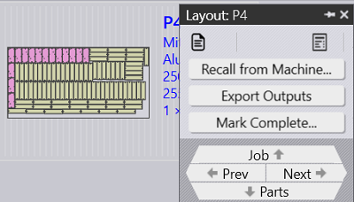
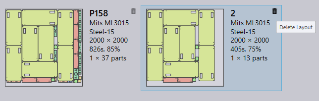

The layouts are put in the release queue if they fall below the cut-off set via the nest settings. These layouts are retried for nesting when more parts are queued for nesting. The Send to Machine command moves such layouts from in-approval to the released state. Once released, they are no longer retried for repacking and the layout outputs are saved to the machine’s output location.
Use this command to add more parts to a relatively poorly packed layout. Like the Interactive Nesting, this is also a wizard driven command and can be used on a single or multiple layouts at the same time.
Praxis mounts the Layout repack wizard in the main work area when this command is used. Hold Ctrl key and select one or more parts to packed on the layout(s) and press next.

The selected parts are displayed in the next step with editable quantity column. Update the part quantities if needed in Update Qty. step and press next to proceed to the nesting. Note that quantity can only be increased and not decreased.

All the layouts are nested separately, and the nested results are displayed with the newly packed parts placed onto them. Selecting the layout displays all the existing layout parts. The result is auto-discarded if no new part is placed during the repacking. A layout with multiple copies may result in different patterns after the repacking.

This wizard-based command can be used to:
● Adapt the layout from one machine to another. This is useful when a machine for which originally a layout was planned goes down and system needs to quickly respond to this change. Or machine loads need to be redistributed.
● Merge layouts packed on smaller sheets on bigger ones. Or split layouts packed on larger sheets into smaller ones. These are useful if material stocks are running low and the layouts using them need to be adapted to this change.
● Enhance the packing efficiency of multiple layouts (potentially nested on different machines) by merging them together.
Select one or more layouts and issue Adapt/Compact to load the command wizard into the work area. The UI displays all selected layouts in the left pane and the layout parts in the Parts pane.

Select machine and material and proceed next to perform layout adapt. Renesting is performed and nest results are displayed in the results pane. Press next to save the results


● The Export Outputs layout command exports the NC, report and layout files to the respective machine output locations. This command regenerates the NC with current unit set to the layout. When used on a job, it exports outputs for all job layouts and parts.
● Use the Mark Complete command to mark a layout as completed. The layout is removed from the active layouts list and part & job status are updated with the quantities moving to completed state. The outputs of a completed layout are removed from the machine output location.

Completed layouts are displayed as grayed-out. And a tick-mark placed in bottom-right further indicates its completion status. The interactive commands like Adapt/Compact…, Add Parts… etc., which are used to prepare/refine layouts for production, are no longer displayed in the right-click command panel. Nests with respect to the completed layouts are removed from the Nest Page.
 The delete command deletes the layout from the repository. If the layout is an active layout, the in-process quantities are returned to the available queue and can be planned again. The outputs of a deleted layout are removed from the machine output location.